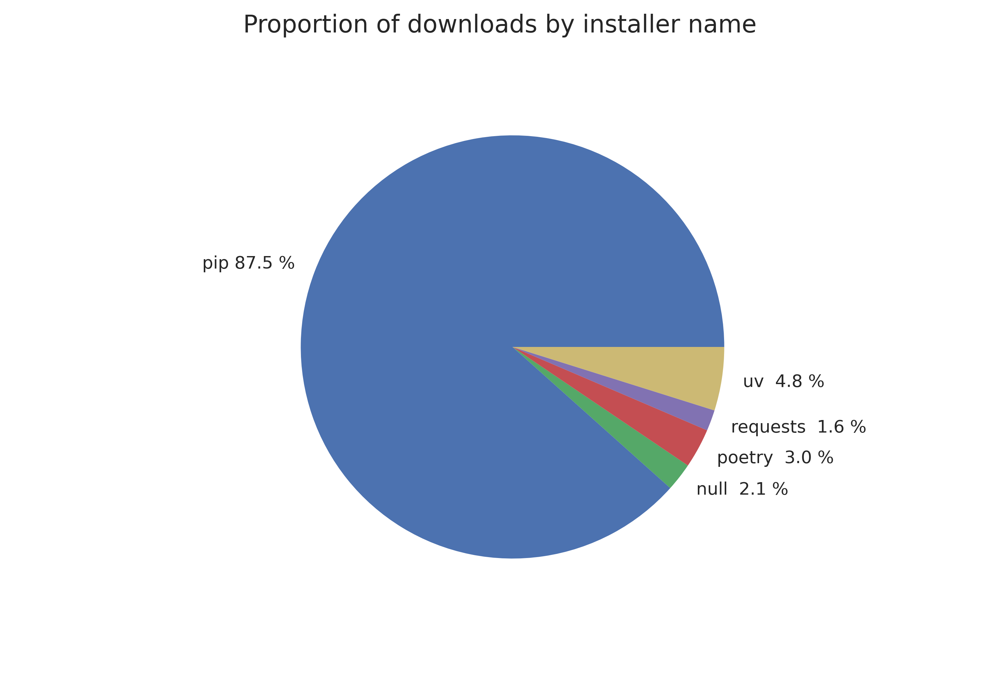
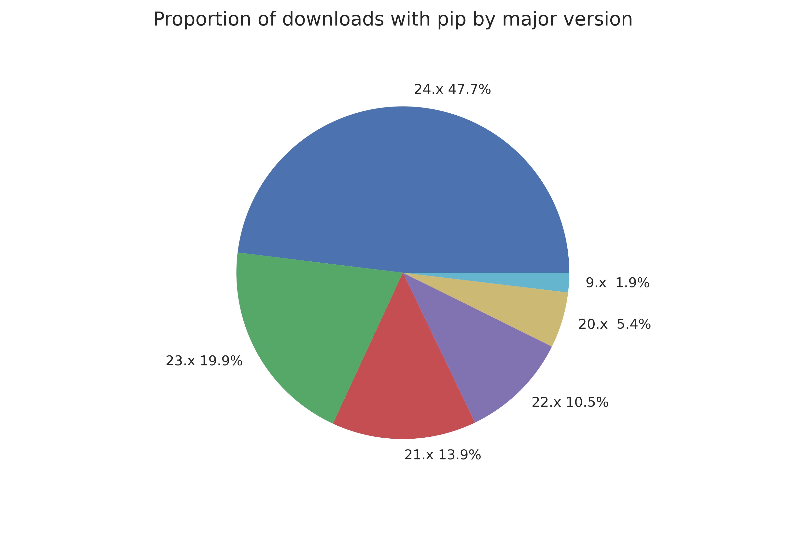

Appendix: Analysis of Installer Usage on PyPI
Note
This analysis is not perfect. While it uses the best available data, mirrors, caches used by enterprises, and other confounding factors could affect the numbers in this analysis. Consider the numbers as trends rather than concrete reliable figures.
One pertinent question to PEP 777 is how frequently Python users update their installer. If users update quite frequently, compatibility concerns are not as important; users will be up-to-date by the time new features get added. On the other hand, if users are frequently using older installers, then incompatible wheels on PyPI would have a much wider impact. To figure out the relative share of up-to-date vs outdated installers, we can use PyPI download statistics.
PyPI publishes a BigQuery dataset, which contains information about each download PyPI receives, including installer name and version when available. The following query was used to collect the data for this analysis:
#standardSQL
SELECT
details.installer.name as installer_name,
details.installer.version as installer_version,
COUNT(*) as num_downloads,
FROM `bigquery-public-data.pypi.file_downloads`
WHERE
-- Only query the last 6 months of data
DATE(timestamp)
BETWEEN DATE_TRUNC(DATE_SUB(CURRENT_DATE(), INTERVAL 6 MONTH), MONTH)
AND CURRENT_DATE()
GROUP BY `installer_name`, `installer_version`
ORDER BY `num_downloads` DESC
With the raw data available, we can start investigating how up-to-date installers that download packages from PyPI are. The below chart shows the breakdown by installer name of all downloads on PyPI for the six month period from March 10, 2024 to September 10, 2024.
As can be seen above, pip is the most popular installer in this time frame. For simplicity’s sake, this analysis will focus on pip installations when considering how up-to-date installers are. pip has existed for a long time, so analyzing the version of pip used to download packages should provide an idea of how frequently users update their installers. Below is a chart breaking down installations in PyPI over the same six month period, now grouped by pip installer major version. pip uses calendar versioning, so an installation from pip 20.x means that the user has not updated their pip in four years.
Over two thirds of users currently run pip from this year or last. However, about 7% are on a version that is at least four years old(!). This indicates that there is a long tail of users who do not regularly update their installers.
Coming back to the initial question for PEP 777, it appears that caution should be taken when publishing wheels with major version 2 to PyPI, as they are likely to cause issues with a small but significant proportion of users who do not regularly update their pip.